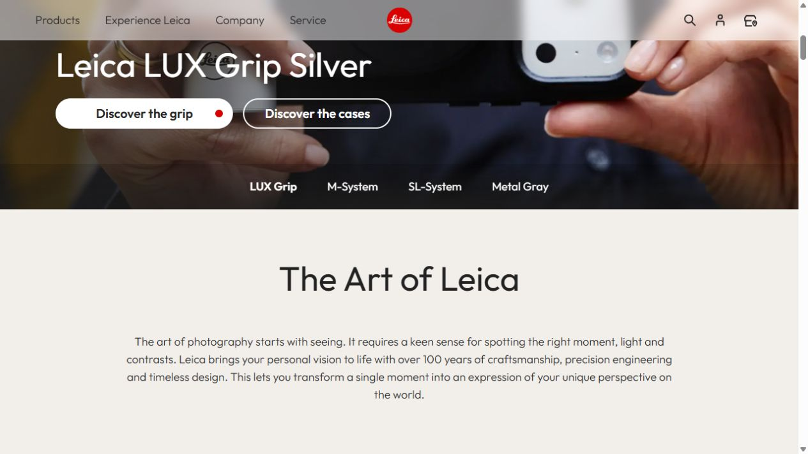
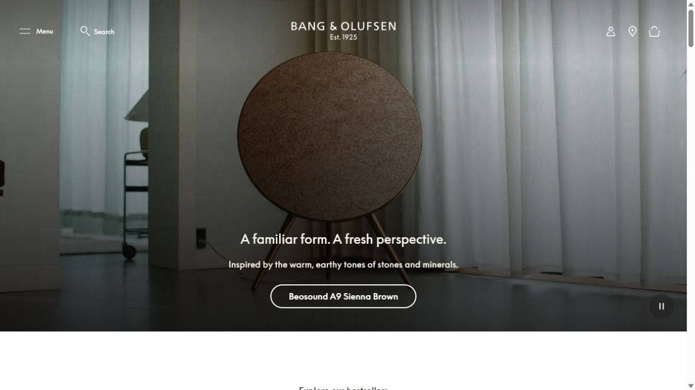
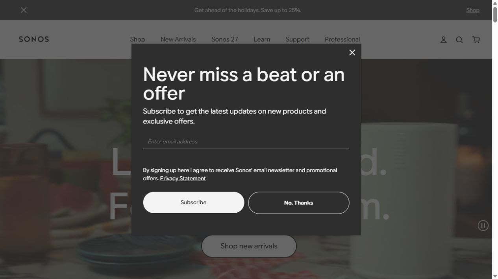

01 Leica ↗구성 추천제품군과 함께 갤러리·교육 프로그램·행사를 연결하는 브랜드 허브.코들은 플랫폼·콘텐츠와 캠프·해커톤이 함께 있으므로, 제품과 경험을 구분해 연결하는 구조를 참고하기 좋습니다.
02 Bang & Olufsen ↗시각적 분위기 추천사진 한 장, 짧은 문구, 절제된 버튼. 흰 배경의 제품 목록으로 이어집니다.배경색과 장식보다 이미지 자체의 품질로 인상을 만드는 방식. 코들에서는 대표 수업 장면의 선별과 촬영이 중요합니다.
03 Sonos ↗서비스 조합 설명 참고사용 장면에서 시작해 제품군과 제품 조합으로 이어지는 허브.코들 플랫폼과 콘텐츠를 함께 사용하는 이유를 보여주는 데 참고할 수 있습니다. 현재 프로모션 구간은 색이 강하므로 전체 색감보다는 정보 흐름을 참고합니다.